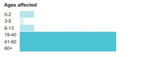

Physical reliance on opioids, a substance found in certain prescription pain medications and illegal drugs like heroin.
Treatable by a medical professional
Usually self-diagnosable
Opioids are prescribed to treat acute pain. With prolonged use, painrelieving effects lessen and pain can become worse. In addition, the body can develop dependence. Opioid dependence causes withdrawal symptoms, which makes it difficult to stop taking them. Addiction occurs when dependence interferes with daily life.
Usually self-diagnosable
Symptoms of addiction include uncontrollable cravings and inability to control opioid use even though it's having negative effects on personal relationships or finances.
People may experience:
Whole body: craving or sweating
Mood: euphoria or general discontent
Also common: physical substance dependence, chronic constipation, small pupils, nausea, reduced sex drive, sensitivity to pain, shallow breathing, or slurred speech
Treatment varies but may include discontinuing the drug. Medications such as methadone can help alleviate the symptoms of withdrawal and cravings. Pairing medication with inpatient or support programs generally has the most success.
Medical procedure
Drug detoxification:Medical management of the serious withdrawal symptoms that occur when a person addicted to drugs stops using them. Often requires prescription medications.
Therapies
Gradual discontinuation of opioids
Counseling:Professional advice and support that help people solve problems, make decisions, and change their behavior.
Opioid replacement therapy
Narcotic: Relieves pain, dulls the senses, and causes drowsiness. May become addictive.
Sedative:Causes drowsiness, calmness, and dulled senses. Some types may become addictive.
Specialists
Pain management:Eases suffering and improves quality of life for those in pain.
Psychiatrist:Treats mental disorders primarily with medications
Primary care provider (PCP):Prevents, diagnoses, and treats diseases.